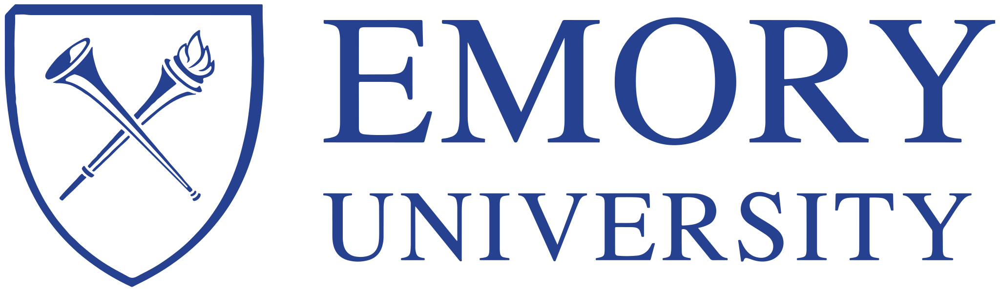
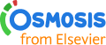
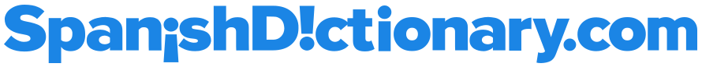
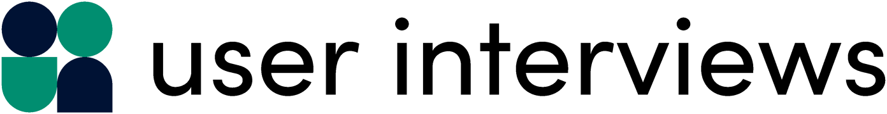
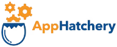
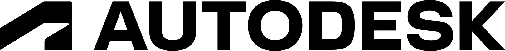

Trusted by learning orgs






Services
-
Strategy Session
I help your leadership team zoom out, map what’s possible, build alignment, and make intentional decisions about your next chapter.
-
Organizational Operating Systems
I help teams adapt their working model, goal setting, tool stack, and meeting design for effectiveness and efficiency.
-
Professional Development Coaching
I help professionals develop interpersonal skills, so they can lead your culture toward collaboration, constructive feedback, trust, and resiliency.
How I work
-
Listen
I learn about your organization’s challenges, bringing lenses of analytical systems thinking and human-centered design.
-
Design
I work with you to design an engagement to support your team and help you prepare for your next chapter.
-
Engage
Engagements may include facilitating working sessions with your team, leading training programs, providing 1:1 coaching, or delivering recommendations.
-
Iterate
We regularly check in to assess results, and iterate until you’re satisfied with the outcomes.